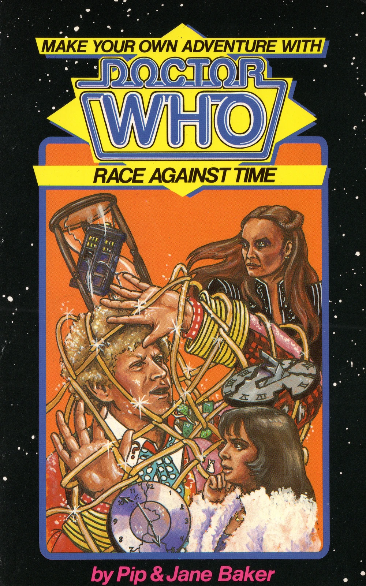

|
Race Against Time
|
NOTE BASIC PLOT DOCTOR COMPANIONS MATERIALISATION CIRCUIT (75) The barren moon of Kerophysi, an area with Stinkstone. (121) The planet of Hipuskyra, in the middle of a dense forest of fungi. (140) A calm blue field on Pyro Shika, not far from a pack of Shikari hunters and a dense thicket of thorns. (152, 160) Your front garden, moments after you left the last time. PREPARATORY READING The Mark of the Rani would serve as a natural prelude, although this story rehashes/recaps so much from it that you really don't need the refresher. CONTINUITY REFERENCES (22) "She remembers from a previous encounter the Rani's facility for ingenious chicanery." Another acknowledgement of The Mark of The Rani, presented here due to it being one of the most egregiously Pip and Jane Baker lines in this book. (35.2) "Unless it's a Judas goat." This distinctively obscure phrase was used by the Doctor in Terror of The Vervoids, another Pip and Jane Baker work. Notably, Vervoids was broadcast only a month after this book's publication, across November 1987. (40.2) "He's my antimatter equivalent." A universe of anti-matter was a central conceit in The Three Doctors, but the Doctor having an evil duplicate from said universe loudly echoes a previous gamebook, Search for The Doctor. (56.2) "'You are a meddlesome fool, Doctor.' The Rani's voice is unaffected by emotion or warmth. 'But you'll not meddle in my affairs again.'" The Mark of The Rani. Naturally, there's a lot of references to that story: I'll only list the more notable ones. (56.2) "'She inadvertently turned mice into monsters,' retorts Peri.'" A recap of the Rani's backstory from The Mark of The Rani, Peri using almost the exact same wording as the Master does in that story. (56.2) "'The works of William Shakespeare, Aristotle and Leonardo Da Vinci. The glory of the Taj Mahal. The wisdom of Abraham Lincoln. The discoveries of Madame Curie. All lost. Pitched into the Rani's primeval slime!'" Just going by television stories or else we'd really be here all day: the tenth Doctor would later meet Shakespeare in The Shakespeare Code, the Fourth missed out on meeting Da Vinci during The Masque of Mandragora but seemed to be close friends with him by City of Death (Leonardo also apparently discussed powered flight with the Meddling Monk, as noted in The Time Meddler), the first Doctor watched Lincoln give the Gettysburg Address on the space-time visualiser during The Chase and during the telemovie the eighth Doctor would claim to know Marie Curie intimately. (89) "You turn to be confronted by an old woman." In what's becoming a long list of suggestions that the Rani is a complete one-trick pony when written by the Bakers, she takes on a disguise of a feeble old woman, just like she did in Mark. The illustration (89.2) even depicts it as the exact same 'bathhouse owner' disguise from that story! Peri doesn't recognise it, but still assumes it's the Rani. (96) "'To forge it, the Rani must have used helium-2.' The Doctor chunters absently. 'Which means she's been back to the Leptonic Era. Very risky.'" Interestingly, Helium-2 and the Leptonic era are concepts mentioned in Time of The Rani, a script by the Bakers that wouldn't see broadcast until 1987, a year after this book was published! (140.2) "He cannot understand why the Time Destabiliser is on Pyro Shika. After all, this is not the planet where the Rani rules." An oblique reference to Miasma Goria, mentioned in The Mark of The Rani. (141) "'Every Shikari woman and child has a small crimson mark on their necks.' 'An implant put there by the Rani. They're her slaves.' Each of the Shikari have also been fed a green maggot impregnated with a chemical that induces absolute subservience." After so many other references to The Mark of The Rani, we finally get a reappearance of the titular marks and the maggots used to create them. (146) "'Flesh-eating?' The Doctor's acceptance of Peri's diagnosis is immediate." The Doctor defers to Peri's knowledge in botanical matters, this passion of hers most being applied onscreen in (gasp!) The Mark of the Rani and Timelash. (157) "Forgive me. The last time I was in there I almost died." The Rani's TARDIS appears with the same exterior it had in Mark (see Continuity Cock-ups) Apparently (20), the three concentric rings in her console are a symbolic representation of the three trailing arms of Earth's galaxy, the Milky Way. OLD FRIENDS AND OLD ENEMIES NEW FRIENDS AND NEW ENEMIES Malevolent minions of the Rani (excepting the previously mentioned controlled Shikari) include: a robotic turret that shoots fireballs (47.2); Ratapes, hybrids of the exact two Earth species you'd expect based on their name (15.2); three gigantic and mindless humanoids (17); a robotic octopus (18); double-headed sharks (78); the freezing Cryogenates (129); and a garden of flesh-eating plants (146). (40) An anti-matter version of the Doctor from another universe makes a small appearance trying to trick you into freeing him from a trap instead of the matter Doctor. The narration tells us he's the opposite of the Doctor in all respects, so we can assume he's a devious villain actively trying to trick you.
CONTINUITY COCK-UPS PLUGGING THE HOLES [Fan-wank theorizing of how to fix continuity cock-ups] FEATURED ALIEN RACES (28) A Neptunianos, a colourful telepathic triple legged being with scales, fins and the head of a dolphin. (47.2) The Rani's discarded experiments in the amphitheatre. Ones possibly using components from Earth creatures include mammals with fish heads (and vice-versa), reptiles crossed with birds and a twenty-metre python with a vulture's beak and claws. Ones not using parts from Earth creatures include a creature with plump and rotund feathered torso and a dinosaur-like head and twelve replicas of a dozen duck billed sloths, the consequence of cloning that went into a chain reaction. Disappointingly, all these fun designs are just mentioned in passing and sit around watching you fight a generic gun turret. (75.2) The difficult to type Quarintalardus, natives to the moon of Kerophysi who feast on rocks and use stinkstone to track prey. They look somewhat like armadillos while being the size of jackals. (129) Cryogenates, freezing zombie-like creatures with internal organs visible through their transparent, crystalline skin. They can follow simple orders, adapt to local temperatures and only need to eat once every hundred years. (140) The Shikari, native bipedal humanoids to Pyro Shika. They have sinewy muscles and snouted heads, each with a cycloptic eye. They can see infra-red heat signatures and are so sensitive to energy that an era of mass lightning storms on their planet is known as the Century of the Great Turmoil. FEATURED LOCATIONS Before landing on the main planet of the book, you have two red herring locations you could visit. These are planet of Hipuskyra filled with giant mushrooms and fungi (121) and the stinkstone abundant moon of Kerophysi (75). Much of this gamebook is an exhausting trek through the planet of Pyro Shika. To be just as exhaustive: a sapphire-blue field (140), an equally blue desert next to a byzantine city (45), a thicket of false thorns (72), a recreational playground filled with Shikari children (141), a steep ravine with a bridge that shoots fire at regular intervals (133), an amphitheatre where the Rani keeps many past experiments (47.2), a fruit grove next to a river (26), a highway with speeding buggies (148), a maze-like grimy subway (15), a seemingly-average field that bounces you like a trampoline into the stratosphere (132), a snowy mountain range (6) with acid-dripping tunnels (13), a cable-car station/ski lodge (120), a gigantic stone wall longer than the Great Wall of China and taller than the Empire State Building (17) which conceals the deserted Shikari central city (93), the city's octopi-infested sewers (137), the Rani's collection of 'pickling vats' (28), a dead-sea lake filled with high salt content (50), a large garden filled with vibrantly coloured plants (146), the rooftops of a small cluster of houses (84), a Shikari safari park (155) and finally, the momentous Temple of the Great Fountain where the Rani is keeping her Time Destabiliser (77). ENDINGS (7) You fall for the Rani's 'feeble old woman' disguise, and she encases you in a trap. She informs you that if you weren't such an unintelligent specimen you would have been of some use to her, before using her Time Destabiliser to send you into a state of 'time limbo', a place "so bleak and sterile that even the word 'nothing' would be a positive term." (10) You take a sailing boat to cross the lake, only to realise that no wind means no progress. A formation of wide-winged buzzards flap their wings into your sail to propel you forwards to an island where you become shipwrecked. You notice the petrified remains of other travellers as you hear a rumble from the local volcano. I suppose the buzzards aren't hungry, they're just jerks. (12.2) You choose the sneakily follow the Rani while Peri goes to the Doctor's aid. A hundred paces later, she paralyses you with a powder and forces you to eat one of her maggots. Your brain dissolves as you become your enemy's subservient zombie. (19) You fail a puzzle and walk through an incorrect door. Waiting for you is an iron maiden designed by the Rani to slowly drain your body of all fluids. What's left of you afterwards wouldn't fill a thimble. (27.2) You try to continue past a puzzle without solving it and are bitten by a giant vampire bat. Its venom petrifies you into stone, and you become part of the cave in the bat's collection of dead adventurers. (28) You successfully escape the robotic octopus by being quick on your feet, but you're quickly captured by the Rani. She admits that she's impressed at your ability to evade her traps and preserves you as a prime example of your species. You're placed in a 'pickling vat' alongside a collection of other aliens, one of whom tells you to abandon all hope of escape. (43) You fail to solve a puzzle and are shocked to death by a gauntlet of electric rods. (45) Too impatient to wait for Peri, you go down a random path at a crossroads and quickly sink through quicksand in a vast desert. You suffocate without anyone ever finding you. (50) You try and fool a Shikari hunter with the old 'throw a rock the other way and hope they're distracted' trick, not realising that a skilled hunter wouldn't fall for it. He throws his paralysing electrostatic net at you and while you dodge it, you lose your footing on the small bridge and fall back onto a road. A road where the Rani has dragster-style buggies speeding well over any safe speed limit. Oh, did I mention that the buggies have razer-sharp knifes sticking out of their hubcaps? (68) Impatiently hungry in a fruit grove, you grab and bite into a nectarine before Peri can test if it's safe or not. It tastes delicious, but you find your lips firmly stick together, as if by glue. You try to dilute it by sticking your face in the river, where a skeletal hand pulls your head underneath. Peri runs to help you, but the hand pulls your entire body underneath the water. You drown. (69) You grab onto an unsecured vine and fall into the vicious jaws of a massive rhododendron. Unluckily for you, this plant regurgitates its food. (70) While jumping across a tile game, you make a mistake and land on one bearing the Rani's face. This projects you 'into limbo!' (74) You're so startled when being chased by Shikari hunters through a snowy mountain range, you break away from the Doctor and Peri. The Doctor shouts to warn you from running into further danger, his booming voice ironically causing an avalanche that buries you all under a thick blanket of snow. (76) You try the rock throwing trick again, this time against a giant humanoid in a cave. The last thing you feel is a gigantic palm swatting you like a fly. (82) Impatiently hungry in a fruit grove, you grab and bite into a peach before Peri can test if it's safe or not. It tastes so bitter that you rush to the river for a drink of water, where a skeletal hand pulls your head underneath. You can't call for Peri, quickly drowning. (86) You fail to solve the puzzle of how to disable the Rani's Time Destabiliser and the entire universe is plunged into an indescribable Armageddon. (87) You're sprayed with something that'll reduce you to a permanent catatonic state, and you spend too long puzzling out what nearby bottle is the antidote. (101) You grab onto an unsecured vine and fall into the vicious jaws of a gigantic gardenia. (102) You're hugged by a Cryogenate and faint just before you die of frostbite. (103) You attempt to switch off the freezing gas casket the Doctor is currently being frozen to death in. You fail to account for the likelihood that the Rani has booby-trapped it (like every single other thing on the planet) and it goes into overdrive, spewing freezing gas all over the Rani's control room. You freeze to death. (113) You chicken out of the adventure, and you walk outside of the TARDIS to go back to your house... and are immediately frozen completely, able to only think as you realise that without stimulation or sustenance, you'll go slowly mad. Presumably, the Doctor and Peri can't succeed on Pyro Shika without you, so you're stuck like this until the Rani kills you by turning back time. (121.2) You land on a planet of mushrooms where the Doctor suggests caution. You laugh and taunt the Doctor for being afraid of a few mushrooms, condescendingly telling him to open the doors so you can get him some for breakfast. Despite Peri's protests, the Doctor is angered into letting you step out. You immediately slip on the mildew-coated ground and slip into a puffball filled with formaldehyde, being embalmed. (122.2) You leave the cautious Peri behind to chase after the Doctor, and a giant moth cocoons you and drops you into a nest of its giant grubs. One locates your jugular with a sucker, killing you in moments. (123) Instead of eating any fruit in the grove, you decide to just directly get a drink of water from the river. Where a skeletal hand pulls you underwater and you drown. (124.2) While investigating one of the Rani's many laboratories, you feel magnetically drawn to a cabinet. Opening it, you're sucked into an alternate world of anti-matter. You meet your anti-matter self for a mere micro-second before your particles coming into contact destroys you both. (131) While in the Ratape tunnel maze, you bump into one that's particularly hungry. Luckily for the Ratape, its hunger is an issue no longer. (132.2) You misinterpret a warning and take the wrong path at a crossroads. You end up walking across a field that has the buoyancy of a giant trampoline. You're uncontrollably bounced higher and higher, until you end up in the planet's atmosphere, where your suffocated body floats. (135) In the most confusing ending of the book, the Doctor simply asks you if want to give up. The text informs you that you can turn to page 1 and 'limbo is yours for eternity', which doesn't quite gel with you restarting it from scratch. (143) Covered on all sides by vicious animals in a Shikari safari park, you attempt to hide in a feeding-truck. Obviously, there are even more hungry animals there who get a better lunch than usual. (152) You obey the Doctor's wishes to stay in the TARDIS and wait for him to get back. You get bored and doze off, awaking to see the Doctor and Peri have managed to sort out the book's conflict on their own. They drop you off back home before you can ask any questions about how the adventure went. You're humiliated that you missed out on it all, but then a delivery-boy hands you a package containing... a copy of the Doctor Who Make Your Own Adventure gamebook, Race Against Time. You read it and get sent back to the beginning. Given that the good ending has the package contain a cassette from the Doctor instead, let's just assume that in this ending the Doctor accidentally dropped you off in the Land of Fiction and leave it at that. (158) You successfully escape a robotic octopus made by the Rani, but your haven is shared by the actual native octopuses of the sewers, also hiding from the robot. They turn out to be quite hungry. (159) You grab onto an unsecured vine and fall onto a completely harmless chrysanthemum, as its last meal gave it indigestion. You roll comfortably to the ground, where a cluster of snowdrops rip you to shreds. (160) You name a park on Pyro Shika after your dead ally Orandar, and the Doctor drops you off back home. As time is unfrozen, you open the package the delivery boy has been reaching out to you since the beginning of your adventure. It contains a cassette from the Doctor and Peri, thanking you for your valuable assistance. The tape ends with a warning that the Rani still lurks throughout time and space... (The Good Ending.) IN SUMMARY - Dylan 'Malk' Carroll |
|
 |